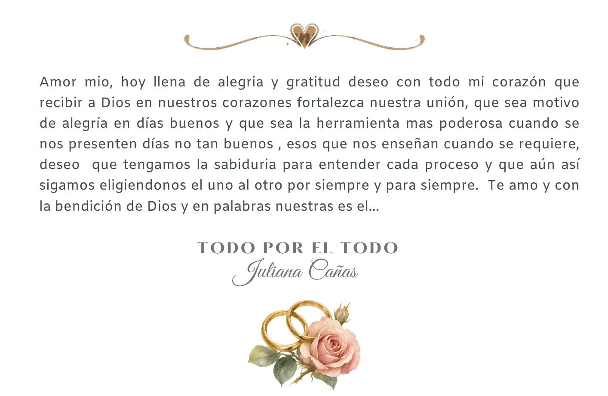

Una unión y la purificación de una nueva vida
Manuel Álvarez & Juliana Cañas

Celebra la unión de nuestras vidas ante el altar junto con la bendición espiritual de nuestro sagrado bautizo.
Invitado Especial
Amigo o Familiar
1 Pase Confirmado
Mesa: General
00
Días
00
Hrs
00
Min
00
Seg
Galería
Asistencia
Confirma tu presencia antes del día del evento para reservar tu lugar.
Llenar FormularioDetalles
Traje de Gala Formal.